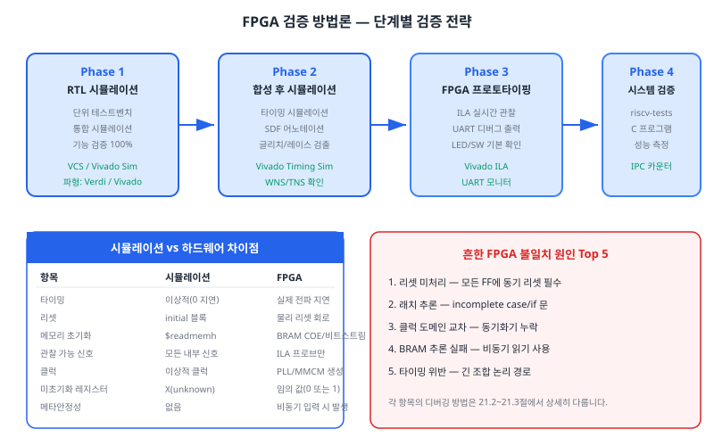
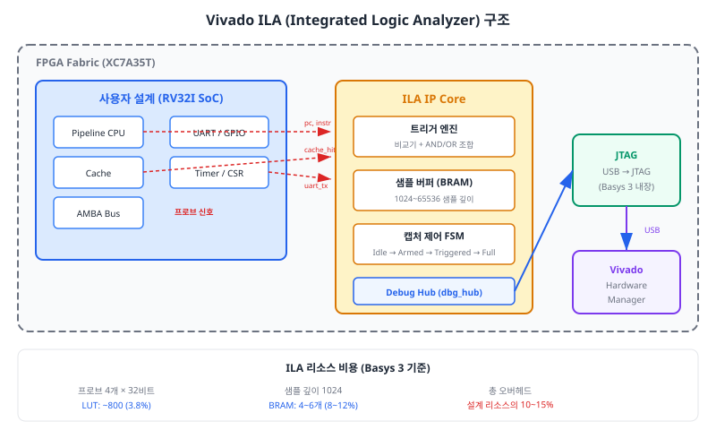
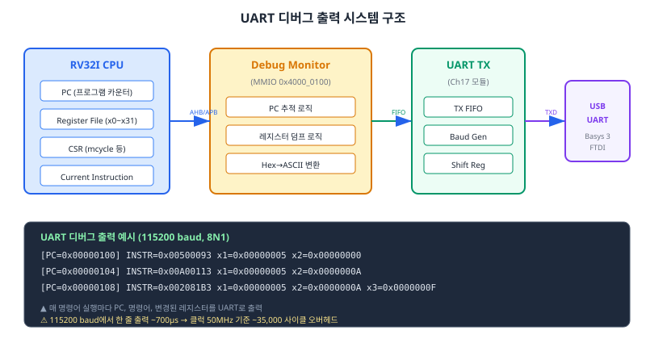
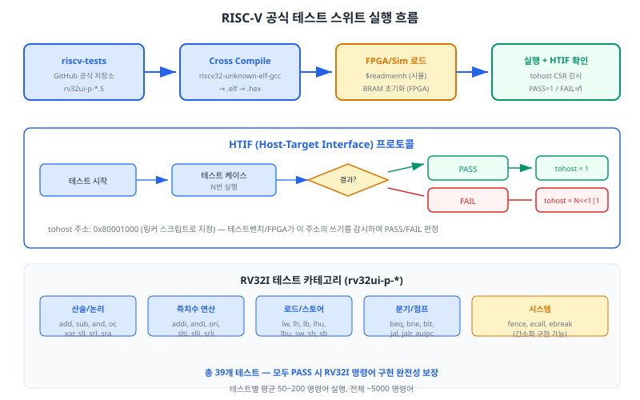
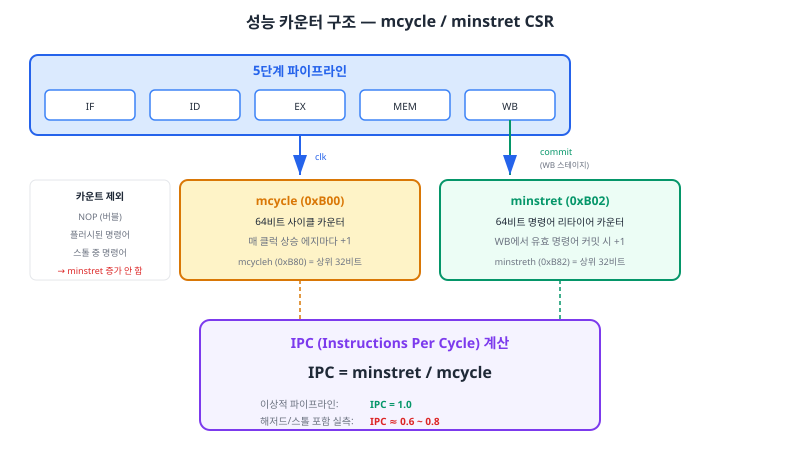

시뮬레이션에서 완벽하게 동작하던 설계가 FPGA에서 오동작하는 것은 하드웨어 엔지니어라면 반드시 겪는 통과의례입니다. 이 챕터에서는 Vivado ILA를 활용한 실시간 신호 관찰, UART 디버그 출력, RISC-V 공식 테스트 스위트 실행, 그리고 성능 카운터를 통한 IPC 측정까지 — FPGA 위에서 프로세서를 검증하고 디버깅하는 체계적인 방법론을 학습합니다.
Chapter 20에서 우리는 Vivado 합성 최적화와 타이밍 클로저를 달성하여, RV32I 파이프라인 프로세서의 비트스트림(bitstream)을 생성하는 데 성공하였습니다. 합성이 완료되고 비트스트림이 만들어졌다는 것은 "설계가 FPGA에 물리적으로 들어갈 수 있다"는 의미일 뿐, "올바르게 동작한다"는 보장이 아닙니다. 실제로 산업 현장에서 ASIC/FPGA 프로젝트의 디버깅에 소요되는 시간은 전체 개발 기간의 40~60%에 달한다는 통계가 있습니다. 이 절에서는 시뮬레이션과 하드웨어 검증이 왜 다른지 이해하고, 체계적인 단계별 검증 전략을 수립합니다.
시뮬레이션과 FPGA 하드웨어 검증 사이에는 다음과 같은 근본적인 차이가 존재합니다.
| 비교 항목 | RTL 시뮬레이션 | FPGA 하드웨어 |
|---|---|---|
| 타이밍 모델 | 이상적 — 조합 논리 지연 0 | 실제 전파 지연, 셋업/홀드 타임 존재 |
| 리셋 상태 | initial 블록으로 결정적 초기화 |
물리 리셋 회로 필요, 파워-온 상태 비결정적 |
| 메모리 초기화 | $readmemh로 즉시 로드 |
BRAM은 비트스트림에 내장(COE), 외부 메모리는 부트로더 필요 |
| 관찰 가능성 | 모든 내부 신호를 파형으로 관찰 가능 | ILA 프로브로 지정한 신호만 관찰 가능 |
| 클럭 | 이상적 클럭 (지터 0, 스큐 0) | PLL/MMCM 생성 클럭, 지터·스큐 존재 |
| 미초기화 레지스터 | X(unknown)로 표시, 전파 추적 가능 | 임의의 0 또는 1 — 조건부 오동작의 원인 |
| 메타안정성 | 모델링되지 않음 (발생하지 않음) | 비동기 입력(버튼, UART RX)에서 발생 가능 |
경험적으로 FPGA에서 시뮬레이션과 다른 동작을 유발하는 가장 흔한 원인 5가지를 정리합니다. 이 목록은 디버깅 시 최우선 점검 체크리스트로 활용합니다.
1. 리셋 미처리: 시뮬레이션에서는 initial 블록이 모든 레지스터를 초기화하지만, FPGA에서는 initial 블록이 합성되지 않습니다(일부 Xilinx FPGA에서는 BRAM 초기화에 한해 지원). 모든 플립플롭에 동기 리셋 또는 비동기 리셋을 반드시 연결해야 합니다. 특히 FSM의 상태 레지스터가 리셋 없이 정의되지 않은 상태에서 시작하면, 예측 불가능한 동작이 발생합니다.
2. 래치 추론(Latch Inference): always_comb 블록에서 모든 경우를 다루지 않은 case나 if 문은 래치를 추론합니다. 시뮬레이션에서는 이전 값을 유지하는 것처럼 보이지만, FPGA에서 래치는 글리치(glitch)에 민감하여 예기치 않은 값을 출력할 수 있습니다. Vivado 합성 로그에서 "inferred latch" 경고를 반드시 확인하십시오.
3. 클럭 도메인 교차(Clock Domain Crossing, CDC): 비동기 신호(예: Basys 3의 물리 버튼, UART RX 입력)를 동기 클럭 도메인에서 직접 샘플링하면 메타안정성이 발생합니다. 2단 동기화기(2-stage synchronizer)를 삽입하여 해결합니다.
4. BRAM 추론 실패: 비동기 읽기로 메모리를 기술하면 Vivado가 BRAM 대신 LUTRAM(분산 RAM)으로 추론합니다. 대용량 메모리에서 LUTRAM은 LUT 자원을 과도하게 소모하여 타이밍 문제를 유발합니다. BRAM을 의도한 경우 동기 읽기(always_ff)로 변경해야 합니다.
5. 타이밍 위반(Timing Violation): 합성 후 WNS(Worst Negative Slack)가 음수이면 셋업 타임 위반이 발생합니다. 시뮬레이션에서는 타이밍을 고려하지 않으므로 문제가 없지만, 실제 FPGA에서는 데이터가 올바르게 래치되지 않아 간헐적 오동작이 발생합니다.

효과적인 FPGA 검증을 위해 다음 4단계 전략을 권장합니다.
Phase 1 — RTL 시뮬레이션(100% 기능 검증): VCS 또는 Vivado Simulator로 모든 기능을 검증합니다. 단위 테스트벤치(Ch04~Ch11)와 통합 시뮬레이션(Ch12)을 통과해야 합니다. 이 단계에서 발견하지 못한 기능 버그는 하드웨어에서 디버깅하기 극히 어렵습니다. 시뮬레이션 커버리지 90% 이상을 목표로 합니다.
Phase 2 — 합성 후 시뮬레이션(타이밍 검증): Vivado에서 구현(Implementation) 완료 후 생성되는 SDF(Standard Delay Format) 파일을 사용하여 타이밍 시뮬레이션을 수행합니다. 실제 게이트 지연이 반영되므로, 타이밍 위반이 있으면 이 단계에서 X 전파로 나타납니다. 이 단계는 선택적이지만, 타이밍 클로저에 확신이 없을 때 유용합니다.
Phase 3 — FPGA 프로토타이핑(하드웨어 기본 검증): 비트스트림을 다운로드하고, LED와 스위치로 기본 동작을 확인합니다. ILA로 내부 신호를 실시간 관찰하고, UART로 디버그 메시지를 출력합니다. 이 단계가 본 챕터의 핵심입니다.
Phase 4 — 시스템 검증(완전성 테스트): riscv-tests 공식 테스트 스위트를 실행하여 모든 RV32I 명령어가 올바르게 구현되었는지 확인합니다. 성능 카운터로 IPC를 측정하여 설계 품질을 정량적으로 평가합니다.
시뮬레이션에서는 Verdi나 Vivado 파형 뷰어로 수천 개의 내부 신호를 자유롭게 관찰할 수 있었습니다. 그러나 FPGA에서는 외부 핀으로 나오는 신호만 오실로스코프로 측정할 수 있습니다. FPGA 내부 신호를 관찰하려면 별도의 장치가 필요한데, Vivado가 제공하는 ILA(Integrated Logic Analyzer, 통합 로직 분석기)가 바로 그 역할을 합니다. ILA는 FPGA 내부에 삽입되는 "칩 내 오실로스코프"로, 실시간으로 지정 신호를 캡처하고 JTAG을 통해 PC로 전송합니다.
ILA IP 코어는 세 가지 핵심 구성 요소로 이루어집니다.
1. 트리거 엔진(Trigger Engine): 사용자가 지정한 조건이 만족될 때 데이터 캡처를 시작합니다. 예를 들어, "PC가 0x00001000이 될 때" 또는 "스톨 신호가 HIGH일 때"와 같은 조건을 설정할 수 있습니다. 여러 프로브의 조건을 AND/OR로 조합하여 복잡한 트리거도 구성 가능합니다.
2. 샘플 버퍼(Sample Buffer): FPGA의 BRAM을 사용하여 캡처된 데이터를 저장합니다. 샘플 깊이(sample depth)는 일반적으로 1024~65536 사이클로 설정합니다. 깊이가 클수록 더 긴 시간의 파형을 볼 수 있지만, BRAM 소모가 증가합니다.
3. 캡처 제어 FSM: Idle → Armed → Triggered → Full 상태를 거치며, 트리거 발생 시점을 중심으로 데이터를 캡처합니다. 트리거 위치(Trigger Position) 설정으로 트리거 전후의 데이터 비율을 조정할 수 있습니다. 예를 들어, 트리거 위치를 50%로 설정하면 트리거 전 512샘플과 후 512샘플을 캡처합니다.

Vivado에서 ILA를 사용하는 두 가지 방법이 있습니다.
방법 1 — IP Catalog에서 ILA IP 생성 후 RTL 인스턴스화: 설계 소스에 ILA 인스턴스를 직접 추가합니다. 프로브 수, 폭, 샘플 깊이를 정밀하게 제어할 수 있습니다. 재현 가능하고 버전 관리에 유리하므로 이 방법을 권장합니다.
방법 2 — 합성 후 Debug 마킹: RTL에 (* mark_debug = "true" *) 속성을 추가하고, 합성 후 "Set Up Debug" 마법사를 사용합니다. 빠르게 프로브를 추가할 수 있지만, 구현을 다시 실행해야 합니다.
본 교재에서는 방법 1을 사용합니다. Vivado IP Catalog에서 "ILA (Integrated Logic Analyzer)"를 검색하고 다음 설정으로 IP를 생성합니다.
| 설정 항목 | 권장 값 | 설명 |
|---|---|---|
| Number of Probes | 8 | 관찰할 신호 그룹 수 |
| Sample Data Depth | 1024 | 캡처 깊이 (BRAM 4~6개 사용) |
| Probe Width (probe0~7) | 각 32비트 | 각 프로브의 비트 폭 |
| Same Clock for All Probes | Yes | 단일 클럭 도메인 사용 |
| Trigger Out Port | Disable | 외부 트리거 불필요 |
ILA IP를 직접 최상위 모듈에 연결하면 코드가 복잡해지므로, 별도의 디버그 래퍼 모듈을 작성하여 프로브 신호를 정리합니다. 아래 코드는 파이프라인 CPU의 핵심 신호를 ILA에 연결하는 래퍼 모듈입니다.
module ila_debug_core (
input logic clk,
input logic rst_n,
// 파이프라인 관찰 신호
input logic [31:0] pc_if, // IF 스테이지 PC
input logic [31:0] instr_if, // IF 스테이지 명령어
input logic [31:0] pc_wb, // WB 스테이지 PC (커밋 완료)
input logic [31:0] alu_result_ex, // EX 스테이지 ALU 결과
// 해저드 제어 신호
input logic stall,
input logic flush,
input logic [1:0] forward_a,
input logic [1:0] forward_b,
// 캐시/성능 신호
input logic icache_hit,
input logic dcache_hit,
input logic [31:0] mcycle_lo,
input logic [31:0] minstret_lo
);
// 해저드 상태를 하나의 프로브로 패킹
logic [31:0] hazard_status;
assign hazard_status = {
24'b0,
forward_b, forward_a, // [5:2] 포워딩 MUX
flush, stall // [1:0] 파이프라인 제어
};
// 캐시 상태 패킹
logic [31:0] cache_status;
assign cache_status = {30'b0, dcache_hit, icache_hit};
// ILA IP 인스턴스 (Vivado에서 생성한 ila_0)
ila_0 u_ila (
.clk (clk),
.probe0 (pc_if), // 트리거 기본 대상
.probe1 (instr_if), // 현재 명령어
.probe2 (pc_wb), // 커밋 PC
.probe3 (alu_result_ex), // ALU 결과
.probe4 (hazard_status), // 해저드 상태
.probe5 (cache_status), // 캐시 히트/미스
.probe6 (mcycle_lo), // 사이클 카운터
.probe7 (minstret_lo) // 명령어 카운터
);
endmodule
코드 분석 포인트:
관련 있는 좁은 폭의 신호들을 하나의 32비트 프로브로 패킹(packing)하면 프로브 수를 절약할 수 있습니다. hazard_status는 스톨, 플러시, 포워딩 신호를 하나의 프로브로 묶은 예입니다. Vivado Hardware Manager에서 각 비트의 의미를 확인하려면 프로브의 비트 이름을 설정하거나, 별도의 문서를 참조합니다.
ILA의 가치는 적절한 트리거 조건을 설정하는 데에 있습니다. "언제 캡처를 시작할 것인가"를 정확히 지정하지 못하면, 1024샘플의 파형은 바다에서 물 한 잔을 떠오는 것과 같습니다. 다음은 RV32I 프로세서 디버깅에 효과적인 트리거 조건 예시입니다.
| 디버깅 목적 | 트리거 조건 | 트리거 위치 |
|---|---|---|
| 특정 함수 진입 관찰 | pc_if == 0x00001000 |
25% (진입 후 동작 위주) |
| 스톨 발생 패턴 분석 | stall == 1 |
50% (전후 맥락 균등) |
| 캐시 미스 디버깅 | icache_hit == 0 |
50% (미스 전후 확인) |
| 분기 오예측 관찰 | flush == 1 |
75% (플러시 원인 추적) |
| 특정 메모리 접근 | mem_addr == 0x80001000 |
50% |
리소스 오버헤드: ILA IP는 FPGA 리소스를 소모합니다. 프로브 8개(각 32비트), 샘플 깊이 1024 기준으로 LUT 약 800개(Basys 3 전체의 3.8%), BRAM 4~6개(8~12%)를 사용합니다. 최종 제품에서는 ILA를 제거해야 하며, ILA 추가/제거 시 합성 결과가 변할 수 있으므로 주의가 필요합니다.
타이밍 영향: ILA 프로브 연결은 팬아웃(fan-out)을 증가시켜 타이밍에 영향을 줄 수 있습니다. 타이밍이 빡빡한 설계에서는 ILA 추가로 타이밍 클로저가 깨질 수 있습니다. 이 경우 프로브 수를 줄이거나, 타이밍 크리티컬하지 않은 신호만 관찰합니다.
샘플링 깊이와 관찰 시간: 50MHz 클럭에서 1024샘플은 20.48μs에 불과합니다. 긴 시간의 동작을 관찰해야 한다면 샘플 깊이를 늘리거나, 스토리지 한정(Storage Qualification) 기능을 사용하여 관심 없는 구간의 데이터를 버리고 관심 구간만 저장합니다.
ILA는 강력하지만, 관찰할 수 있는 신호 수와 시간이 제한됩니다. 장시간의 프로세서 동작을 추적하거나, 텍스트 형태의 디버그 정보가 필요할 때는 UART 디버그 출력이 더 적합합니다. Chapter 17에서 설계한 UART 컨트롤러를 활용하여, PC 추적, 레지스터 덤프, 간이 모니터 프로그램을 구현합니다.
| 비교 항목 | ILA | UART 디버그 |
|---|---|---|
| 관찰 시간 | 제한적 (1024~65536 샘플) | 무제한 (FIFO 오버플로까지) |
| 관찰 신호 수 | 프로브 수에 제한 | 소프트웨어로 자유 선택 |
| 데이터 형식 | 바이너리 파형 | 텍스트 (사람이 읽기 편함) |
| 시간 해상도 | 매 클럭 사이클 | 보드레이트에 의해 제한 |
| CPU 성능 영향 | 없음 (비침습적) | 있음 (출력 대기 시간) |
| 리소스 비용 | BRAM 4~6개 | LUT ~200, BRAM 없음 |
UART 디버그 시스템은 세 계층으로 구성됩니다.
1. 관찰 계층 — CPU 신호 캡처: WB 스테이지의 PC, 명령어, 목적 레지스터 번호와 값을 캡처합니다. 유효한 명령어가 커밋될 때만 캡처하여, 버블(NOP)이나 플러시된 명령어는 제외합니다.
2. 변환 계층 — Hex→ASCII 변환: 32비트 바이너리 값을 8자리 16진수 ASCII 문자열로 변환합니다. 예를 들어, PC 값 0x00000100은 문자열 "00000100"으로 변환됩니다.
3. 전송 계층 — UART TX: Chapter 17에서 설계한 UART 송신기를 재사용합니다. TX FIFO를 통해 문자열을 버퍼링하고, 보드레이트에 맞춰 직렬 전송합니다.

디버그 모니터는 MMIO 영역 0x4000_0100에 매핑하여, 소프트웨어에서 동적으로 제어할 수 있습니다.
| 오프셋 | 레지스터 | 비트 필드 | 설명 |
|---|---|---|---|
0x00 |
CTRL | [0] enable, [1] trace_pc, [2] trace_reg, [3] single_step | 디버그 제어 |
0x04 |
FILTER_START | [31:0] PC 시작 주소 | PC 필터 시작 범위 |
0x08 |
FILTER_END | [31:0] PC 종료 주소 | PC 필터 종료 범위 |
0x0C |
STATUS | [0] fifo_full, [1] tx_busy | 전송 상태 (읽기 전용) |
디버그 모니터의 핵심은 FSM 기반 메시지 생성 로직입니다. WB 스테이지에서 유효 명령어가 커밋되면, FSM이 "[PC=XXXXXXXX] RdNN=XXXXXXXX\r\n" 형식의 문자열을 UART TX FIFO에 순차적으로 기록합니다.
// Hex → ASCII 변환 함수
function automatic logic [7:0] hex_to_ascii(
input logic [3:0] nibble
);
if (nibble < 4'd10)
return 8'h30 + {4'b0, nibble}; // '0'~'9'
else
return 8'h41 + {4'b0, nibble} - 8'd10; // 'A'~'F'
endfunction
// 디버그 메시지 생성 FSM (핵심 상태)
typedef enum logic [3:0] {
S_IDLE, // 대기 — wb_valid 감지
S_PREFIX, // "[PC=" 4문자 출력
S_PC_HEX, // PC 값 8자리 hex 출력
S_MID, // "] " 2문자 출력
S_RD_PREFIX, // "Rd" 2문자 출력
S_RD_NUM, // 레지스터 번호 2자리 출력
S_RD_EQ, // "=" 1문자 출력
S_RD_HEX, // 레지스터 값 8자리 hex 출력
S_NEWLINE // "\r\n" 2문자 출력
} state_t;
전체 코드는 code_examples/ch21_uart_debug_monitor.sv에서 확인할 수 있습니다. 핵심 설계 결정은 다음과 같습니다.
PC 필터 기능: 모든 명령어를 추적하면 UART의 대역폭을 초과합니다. 115200 baud에서 한 줄(약 30문자) 출력에 약 2.6ms가 소요되므로, 50MHz 클럭 기준 약 130,000 사이클의 오버헤드가 발생합니다. PC 필터를 설정하여 관심 구간(예: 특정 함수)의 명령어만 추적하면 오버헤드를 대폭 줄일 수 있습니다.
FIFO 오버플로 처리: CPU 실행 속도가 UART 전송 속도보다 훨씬 빠르므로, TX FIFO가 가득 차면 새 데이터가 손실됩니다. 이를 방지하려면 (1) 보드레이트를 높이거나(921600 baud 권장), (2) FIFO 깊이를 늘리거나, (3) PC 필터를 활용하여 추적 범위를 좁힙니다.
Basys 3의 USB-UART 포트를 PC에 연결하고, 터미널 프로그램(PuTTY, Tera Term, 또는 minicom)을 다음 설정으로 구성합니다.
| 설정 항목 | 값 |
|---|---|
| 보드레이트 | 115200 |
| 데이터 비트 | 8 |
| 패리티 | None |
| 정지 비트 | 1 |
| 흐름 제어 | None |
정상 동작 시 터미널에 다음과 같은 출력이 표시됩니다.
[PC=00000100] Rd01=00000005
[PC=00000104] Rd02=0000000A
[PC=00000108] Rd03=0000000F
[PC=0000010C]
[PC=00000110] Rd04=FFFFFFFE
각 줄은 WB 스테이지에서 커밋된 하나의 명령어를 나타냅니다. 레지스터 쓰기가 없는 명령어(분기, 스토어)는 RdNN= 부분이 생략됩니다.
지금까지 개별 모듈 테스트벤치와 통합 시뮬레이션으로 프로세서를 검증해 왔습니다. 그러나 이 테스트들은 우리가 직접 작성한 것이므로, 무의식적인 편향(bias)이 있을 수 있습니다. 예를 들어, 특정 명령어 조합이나 경계 조건을 놓칠 수 있습니다. 이 문제를 해결하기 위해, RISC-V 재단이 공식 제공하는 riscv-tests 테스트 스위트를 사용합니다. 이 테스트 스위트는 각 RV32I 명령어를 독립적으로 검증하는 39개의 테스트 프로그램으로 구성되어 있으며, 전 세계 수백 개의 RISC-V 구현에서 검증된 "황금 기준(golden reference)"입니다.
riscv-tests 저장소(github.com/riscv-software-src/riscv-tests)는 ISA 수준의 명령어 검증 테스트를 제공합니다. RV32I 기본 명령어 세트에 해당하는 테스트는 rv32ui-p-* 패턴의 파일명을 가지며, ui는 "User-level Integer"를, p는 "Physical addressing"을 의미합니다.
| 카테고리 | 테스트 파일 | 검증 내용 |
|---|---|---|
| 산술/논리 | rv32ui-p-add, sub, and, or, xor, sll, srl, sra, slt, sltu | R 타입 연산 결과 정확성 |
| 즉치수 연산 | rv32ui-p-addi, andi, ori, xori, slti, sltiu, slli, srli, srai | I 타입 연산, 즉치수 부호 확장 |
| 로드/스토어 | rv32ui-p-lw, lh, lb, lhu, lbu, sw, sh, sb | 메모리 접근, 바이트 정렬, 부호/제로 확장 |
| 분기 | rv32ui-p-beq, bne, blt, bge, bltu, bgeu | 조건 분기 판정, PC 상대 주소 |
| 점프 | rv32ui-p-jal, jalr | 무조건 점프, 링크 레지스터 |
| 상위 즉치수 | rv32ui-p-lui, auipc | U 타입 상위 20비트 로드 |
| 시스템 | rv32ui-p-fence, ecall, ebreak | 시스템 명령어 (간소화 구현) |

riscv-tests의 테스트 결과 판정은 HTIF(Host-Target Interface, 호스트-타겟 인터페이스) 프로토콜을 사용합니다. 핵심은 tohost라는 특정 메모리 주소에 테스트 결과를 기록하는 것입니다.
테스트 프로그램이 종료되면 tohost 주소에 값을 기록합니다. 이 값의 의미는 다음과 같습니다.
| tohost 값 | 의미 | 해석 |
|---|---|---|
0x00000001 |
PASS | 모든 테스트 케이스 통과 |
홀수, != 1 |
FAIL | 실패한 테스트 번호 = (값 >> 1) |
0x00000000 |
미완료 | 테스트가 아직 진행 중 |
예를 들어, tohost = 0x0000000D(13)이면 실패한 테스트 케이스 번호는 13 >> 1 = 6입니다. 테스트 소스 코드에서 6번 케이스를 확인하면 어떤 명령어 시나리오가 실패했는지 정확히 파악할 수 있습니다.
테스트벤치(시뮬레이션)와 FPGA 모두에서 사용 가능한 HTIF 모니터 모듈을 구현합니다. 이 모듈은 메모리 쓰기를 감시하여 tohost 주소에 비-0 값이 기록되면 테스트 결과를 출력합니다.
module htif_monitor #(
parameter TOHOST_ADDR = 32'h8000_1000
)(
input logic clk,
input logic rst_n,
// 메모리 쓰기 관찰 인터페이스
input logic mem_wen,
input logic [31:0] mem_addr,
input logic [31:0] mem_wdata,
// 테스트 결과 출력
output logic test_done,
output logic test_pass,
output logic [15:0] test_id
);
always_ff @(posedge clk or negedge rst_n) begin
if (!rst_n) begin
test_done <= 1'b0;
test_pass <= 1'b0;
test_id <= 16'h0;
end else begin
if (mem_wen && (mem_addr == TOHOST_ADDR) &&
(mem_wdata != 32'h0)) begin
test_done <= 1'b1;
test_pass <= (mem_wdata == 32'h1);
test_id <= mem_wdata[16:1];
end
end
end
endmodule
코드 분석 포인트:
TOHOST_ADDR은 링커 스크립트에서 tohost 심볼의 주소와 일치해야 합니다. riscv-tests 기본 링커 스크립트에서는 0x80001000을 사용합니다. 우리 프로세서의 메모리 맵에 맞게 조정이 필요할 수 있습니다(예: DMEM 시작 주소가 0x00010000인 경우, 테스트의 링커 스크립트를 수정).
riscv-tests를 빌드하고 프로세서에서 실행하는 절차는 다음과 같습니다.
단계 1 — 소스 다운로드 및 빌드:
# riscv-tests 저장소 클론
git clone https://github.com/riscv-software-src/riscv-tests
cd riscv-tests
git submodule update --init --recursive
# 빌드 (RV32I only, 물리 주소 모드)
./configure --prefix=$PWD/target
make isa
# .elf → .hex 변환 (시뮬레이션/FPGA 로드용)
riscv32-unknown-elf-objcopy -O verilog \
rv32ui-p-add rv32ui-p-add.hex
단계 2 — 시뮬레이션 실행:
# VCS 시뮬레이션 (테스트 파일 경로를 파라미터로 전달)
vcs -sverilog -f filelist.f \
+define+INIT_FILE=\"rv32ui-p-add.hex\" \
-o simv
./simv +timeout=100000
단계 3 — 자동화 스크립트:
39개 테스트를 수동으로 하나씩 실행하는 것은 비효율적입니다. Makefile 기반 회귀 테스트(regression test) 스크립트를 작성하여 전체 테스트를 자동화합니다.
# Makefile 예시 — 전체 rv32ui 테스트 자동 실행
TESTS := $(wildcard rv32ui-p-*)
RESULTS := $(TESTS:=.result)
all: $(RESULTS)
@echo "=== 결과 요약 ==="
@grep -c PASS *.result | tail -1
@grep -c FAIL *.result | tail -1
%.result: %
@echo "실행: $<"
@./simv +INIT_FILE=$<.hex > $@ 2>&1
@grep -q "TEST PASSED" $@ && echo " PASS" || echo " FAIL"
.PHONY: all clean
FPGA에서 테스트를 실행할 때는 시뮬레이션과 몇 가지 차이가 있습니다.
메모리 초기화: FPGA에서는 $readmemh 대신 BRAM을 비트스트림에 포함시키거나, UART 부트로더를 통해 프로그램을 동적 로드합니다. 테스트를 교체할 때마다 비트스트림을 재생성하는 것은 비효율적이므로, 간이 부트로더를 구현하면 편리합니다.
결과 확인: $display와 $finish는 시뮬레이션 전용입니다. FPGA에서는 HTIF 모니터의 test_pass/test_done 신호를 LED에 연결하거나, UART로 결과를 출력합니다.
// FPGA 최상위 모듈에서 HTIF 모니터 연결 예시
htif_monitor #(
.TOHOST_ADDR (32'h0001_1000) // 메모리 맵에 맞게 조정
) u_htif (
.clk (clk_50mhz),
.rst_n (rst_n),
.mem_wen (dmem_wen),
.mem_addr (dmem_addr),
.mem_wdata (dmem_wdata),
.test_done (test_done),
.test_pass (test_pass),
.test_id (test_id)
);
// LED 연결
assign led[0] = test_pass; // LD0: 녹색 = PASS
assign led[1] = ~test_pass & test_done; // LD1: 적색 = FAIL
프로세서가 "올바르게" 동작하는 것을 검증한 후에는, "얼마나 빠르게" 동작하는지를 정량적으로 측정해야 합니다. RISC-V 사양은 이를 위해 두 가지 핵심 성능 카운터를 정의합니다: mcycle(사이클 카운터)과 minstret(리타이어된 명령어 카운터). 이 두 값의 비율이 바로 프로세서 아키텍처의 핵심 지표인 IPC(Instructions Per Cycle, 사이클당 명령어 수)입니다.
RISC-V 사양에서 정의하는 성능 관련 CSR(Control and Status Register)은 다음과 같습니다. 이 CSR들은 Chapter 18에서 구현한 CSR 모듈에 추가합니다.
| CSR 주소 | 이름 | 설명 | 비트 폭 |
|---|---|---|---|
0xB00 |
mcycle | 사이클 카운터 하위 32비트 | 32 |
0xB80 |
mcycleh | 사이클 카운터 상위 32비트 | 32 |
0xB02 |
minstret | 명령어 리타이어 카운터 하위 32비트 | 32 |
0xB82 |
minstreth | 명령어 리타이어 카운터 상위 32비트 | 32 |
0x320 |
mcountinhibit | 카운터 억제 레지스터 — [0]:CY, [2]:IR | 32 |
mcycle과 minstret은 모두 64비트 카운터입니다. RV32I는 32비트 CPU이므로, 각 카운터를 하위 32비트(mcycle, minstret)와 상위 32비트(mcycleh, minstreth)의 두 CSR로 분할하여 접근합니다.

mcycle 증가 조건: 매 클럭 상승 에지(posedge clk)마다 무조건 +1 증가합니다. 파이프라인 스톨, 플러시 여부와 무관합니다. mcountinhibit[0](CY 비트)이 1이면 증가를 멈춥니다.
minstret 증가 조건: WB 스테이지에서 유효한 명령어가 커밋될 때만 +1 증가합니다. 다음 경우에는 증가하지 않습니다:
이 조건을 정확히 구현하려면, WB 스테이지에 wb_valid 신호를 설계해야 합니다. 이 신호는 "현재 WB에 있는 명령어가 유효하고, 아직 카운트되지 않았으며, 커밋이 확정된 상태"일 때만 HIGH입니다.
module perf_counters (
input logic clk,
input logic rst_n,
input logic wb_valid, // WB 유효 커밋
input logic count_inhibit, // 전역 카운터 정지
input logic csr_wen, // CSR 쓰기
input logic [11:0] csr_addr,
input logic [31:0] csr_wdata,
output logic [31:0] csr_rdata,
output logic csr_valid
);
localparam CSR_MCYCLE = 12'hB00;
localparam CSR_MCYCLEH = 12'hB80;
localparam CSR_MINSTRET = 12'hB02;
localparam CSR_MINSTRETH = 12'hB82;
logic [63:0] mcycle;
logic [63:0] minstret;
// mcycle — 매 클럭 +1
always_ff @(posedge clk or negedge rst_n) begin
if (!rst_n)
mcycle <= 64'h0;
else if (csr_wen && csr_addr == CSR_MCYCLE)
mcycle[31:0] <= csr_wdata;
else if (csr_wen && csr_addr == CSR_MCYCLEH)
mcycle[63:32] <= csr_wdata;
else if (!count_inhibit)
mcycle <= mcycle + 64'h1;
end
// minstret — 유효 명령어 커밋 시 +1
always_ff @(posedge clk or negedge rst_n) begin
if (!rst_n)
minstret <= 64'h0;
else if (csr_wen && csr_addr == CSR_MINSTRET)
minstret[31:0] <= csr_wdata;
else if (csr_wen && csr_addr == CSR_MINSTRETH)
minstret[63:32] <= csr_wdata;
else if (wb_valid && !count_inhibit)
minstret <= minstret + 64'h1;
end
// CSR 읽기
always_comb begin
csr_valid = 1'b1;
case (csr_addr)
CSR_MCYCLE: csr_rdata = mcycle[31:0];
CSR_MCYCLEH: csr_rdata = mcycle[63:32];
CSR_MINSTRET: csr_rdata = minstret[31:0];
CSR_MINSTRETH: csr_rdata = minstret[63:32];
default: begin
csr_rdata = 32'h0;
csr_valid = 1'b0;
end
endcase
end
endmodule
RV32I에서 64비트 카운터를 읽으려면 두 번의 CSR 읽기가 필요합니다(하위 32비트 + 상위 32비트). 문제는 두 번의 읽기 사이에 하위 32비트가 오버플로하여 상위 32비트가 변할 수 있다는 것입니다. RISC-V 사양은 다음과 같은 안전한 읽기 절차를 권장합니다.
// 64비트 mcycle 안전한 읽기 (RISC-V 어셈블리)
retry:
csrr a2, mcycleh // 상위 32비트 읽기
csrr a0, mcycle // 하위 32비트 읽기
csrr a1, mcycleh // 상위 32비트 재읽기
bne a2, a1, retry // 상위가 변했으면 재시도
// a1:a0 = 64비트 mcycle 값
이 패턴은 읽기 중 오버플로가 발생하면 재시도하여, 항상 일관된 64비트 값을 얻습니다. 상위 비트가 변하는 빈도는 매우 낮으므로(2^32 사이클 = 50MHz에서 약 86초마다), 재시도는 거의 발생하지 않습니다.
성능 카운터를 활용하여 우리 프로세서의 실제 IPC를 측정해 봅시다. C 언어로 간단한 벤치마크를 작성합니다.
// IPC 측정 벤치마크 (C 코드)
#include <stdint.h>
// CSR 읽기 인라인 어셈블리 매크로
#define read_mcycle() ({ uint32_t v; \
asm volatile("csrr %0, mcycle" : "=r"(v)); v; })
#define read_minstret() ({ uint32_t v; \
asm volatile("csrr %0, minstret" : "=r"(v)); v; })
volatile int result;
void benchmark_loop(void) {
// 성능 측정 구간 시작
uint32_t cycle_start = read_mcycle();
uint32_t instr_start = read_minstret();
// 벤치마크: 1~100 합산
int sum = 0;
for (int i = 1; i <= 100; i++) {
sum += i;
}
result = sum; // 최적화 방지
// 성능 측정 구간 종료
uint32_t cycle_end = read_mcycle();
uint32_t instr_end = read_minstret();
uint32_t cycles = cycle_end - cycle_start;
uint32_t instrs = instr_end - instr_start;
// UART로 결과 출력 (Ch22에서 printf 구현 후 사용)
// printf("Cycles: %u, Instructions: %u, IPC: %u.%02u\n",
// cycles, instrs,
// instrs / cycles, (instrs * 100 / cycles) % 100);
}
일반적인 5단계 파이프라인 프로세서에서 이 벤치마크의 예상 IPC는 다음과 같습니다.
| 프로세서 구성 | 예상 IPC | 주요 IPC 손실 원인 |
|---|---|---|
| 해저드 없는 이상적 파이프라인 | 1.00 | 없음 |
| 포워딩 없는 파이프라인 (스톨만) | 0.40~0.50 | 데이터 해저드 스톨이 빈번 |
| 포워딩 + 정적 분기 예측 | 0.65~0.80 | Load-Use 스톨 + 분기 오예측 |
| 포워딩 + 동적 분기 예측(2-bit) | 0.75~0.90 | Load-Use 스톨 + 간헐적 오예측 |
| 캐시 미스 포함 | 0.50~0.70 | 위 + 캐시 미스 페널티 |
이 챕터에서는 FPGA 위에서 프로세서를 검증하고 디버깅하는 체계적인 방법론을 학습하였습니다.
| 주제 | 핵심 내용 | 관련 파일 |
|---|---|---|
| FPGA 검증 방법론 | 시뮬레이션 vs 하드웨어의 7가지 차이점, 5대 불일치 원인, 4단계 검증 전략(RTL Sim → 합성 후 Sim → FPGA 프로토타이핑 → 시스템 검증) | — |
| Vivado ILA | 트리거 엔진 + 샘플 버퍼 + 캡처 FSM 구조, 프로브 패킹, 트리거 조건 전략, 리소스 비용(LUT ~800, BRAM 4~6) | ch21_ila_debug_core.sv |
| UART 디버그 | PC 추적, 레지스터 덤프, Hex→ASCII 변환 FSM, MMIO 제어 레지스터, PC 필터링 | ch21_uart_debug_monitor.sv |
| riscv-tests | 39개 RV32I 명령어 테스트, HTIF tohost 프로토콜, 테스트 빌드/실행 자동화 | ch21_htif_monitor.sv |
| 성능 카운터 | mcycle(사이클), minstret(명령어 리타이어), 64비트 안전 읽기, IPC = minstret/mcycle | ch21_perf_counters.sv |
test_id[7:0]을 2자리 hex로 변환)